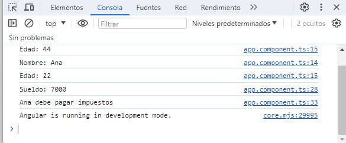

La herencia es otra característica fundamental de la programación orientada a objetos y TypeScript lo implementa.
La herencia significa que se pueden crear nuevas clases partiendo de clases existentes, que tendrá todas los atributos y los métodos de su 'superclase' o 'clase padre' y además se le podrán añadir otros atributos y métodos propios.
Veamos con un ejemplo la sintaxis que plantea TypeScript para implementar la herencia:
class Persona {
protected nombre: string;
protected edad: number;
constructor(nombre: string, edad: number) {
this.nombre = nombre;
this.edad = edad;
}
imprimir() {
console.log(`Nombre: ${this.nombre}`);
console.log(`Edad: ${this.edad}`);
}
}
class Empleado extends Persona {
private sueldo: number;
constructor(nombre: string, edad: number, sueldo: number) {
super(nombre, edad);
this.sueldo = sueldo;
}
override imprimir() {
super.imprimir();
console.log(`Sueldo: ${this.sueldo}`);
}
pagaImpuestos() {
if (this.sueldo > 5000)
console.log(`${this.nombre} debe pagar impuestos`);
else
console.log(`${this.nombre} no debe pagar impuestos`);
}
}
El resultado de ejecutar en la consola del navegador es (recordar que la consola la podemos abrir desde el navegador presionando la tecla F12 ):
Mediante la palabra clave extends indicamos el nombre de la clase padre. Una clase puede heredar de una sola clase (en este ejemplo 'Persona'):
class Empleado extends Persona {
private sueldo: number;
constructor(nombre: string, edad: number, sueldo: number) {
super(nombre, edad);
this.sueldo = sueldo;
}
La subclase Empleado puede acceder a las propiedades de la clase padre si los mismos se definieron en forma public o protected, debemos agregar la palabra clave 'override' para sobreescribir un método de la clase padre:
override imprimir() {
super.imprimir();
console.log(`Sueldo: ${this.sueldo}`);
}
Con el modificador protected permitimos que la subclase pueda acceder a los atributos de la clase padre pero luego donde definamos un objeto de esta clase no los pueda acceder y permanezcan encapsulados:
const empleado1=new Empleado('Ana', 22, 7000);
empleado1.nombre='facundo'; //error
En algunas situaciones tenemos métodos y propiedades comunes a un conjunto de clases, podemos agrupar dichos métodos y propiedades en una clase abstracta.
Hay una sintaxis especial en TypeScript para indicar que una clase es abstracta.
No se pueden definir objetos de una clase abstracta y seguramente será heredada por otras clases de las que si podremos definir objetos.
Problema: Declarar una clase abstracta que represente una Operación. Definir en la misma tres propiedades valor1, valor2 y resultado, y tres métodos: constructor, imprimir y operar (éste último hacerlo abstracto). Plantear dos clases llamadas Suma y Resta que hereden de la clase Operación e implementen el método abstracto operar.
abstract class Operacion {
public valor1: number;
public valor2: number;
public resultado: number = 0;
constructor(v1: number, v2: number) {
this.valor1 = v1;
this.valor2 = v2;
}
abstract operar(): void;
imprimir() {
console.log(`Resultado: ${this.resultado}`);
}
}
class Suma extends Operacion {
constructor(v1: number, v2: number) {
super(v1, v2);
}
operar() {
this.resultado = this.valor1 + this.valor2;
}
}
class Resta extends Operacion {
constructor(v1: number, v2: number) {
super(v1, v2);
}
operar() {
this.resultado = this.valor1 - this.valor2;
}
}
let suma1: Suma;
suma1 = new Suma(10, 4);
suma1.operar();
suma1.imprimir();
let resta1: Resta;
resta1 = new Resta(10, 4);
resta1.operar();
resta1.imprimir();
Mediante la palabra clave abstract indicamos que la clase debe definirse como abstracta, luego no se pueden definir objetos de la clase Operacion:
abstract class Operacion {
public valor1: number;
public valor2: number;
public resultado: number = 0;
constructor(v1: number, v2: number) {
this.valor1 = v1;
this.valor2 = v2;
}
abstract operar(): void;
imprimir() {
console.log(`Resultado: ${this.resultado}`);
}
}
Dentro de la clase abstracta definimos un método abstracto llamado operar, esto obliga a todas las clases que heredan de 'Operacion' implementar el algoritmo de dicho método, sino se genera un error en tiempo de compilación.
La subclase Suma al heredar de Operación implementa el método operar:
class Suma extends Operacion {
constructor(v1: number, v2: number) {
super(v1, v2);
}
operar() {
this.resultado = this.valor1 + this.valor2;
}
}
Solo podemos definir objetos de las clases Suma y Resta. Se genera un error si tratamos de crear un objeto de la clase Operacion:
let suma1: Suma; suma1=new Suma(10, 4); suma1.operar(); suma1.imprimir();